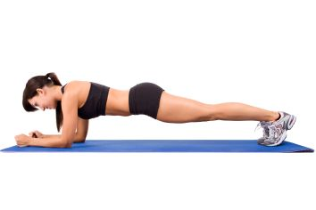
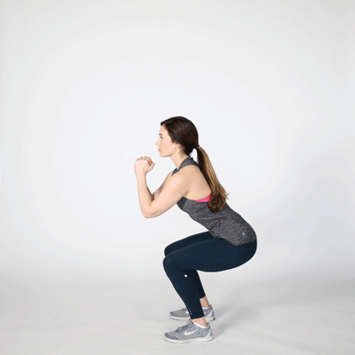
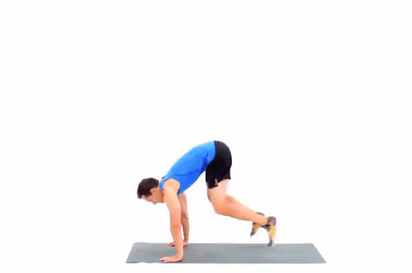
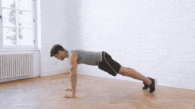
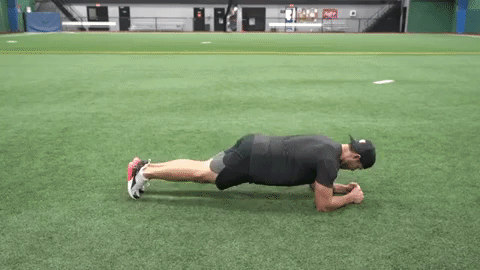
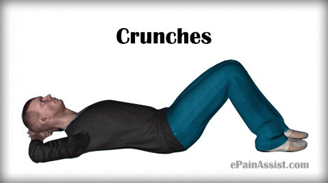
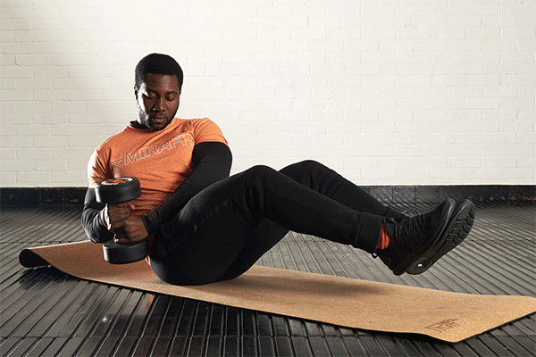
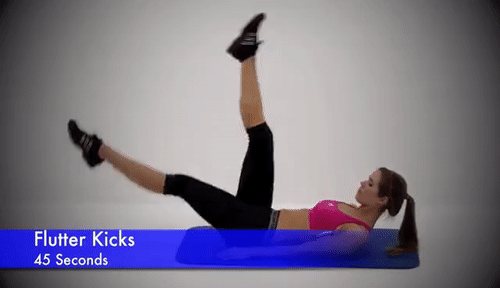

Aim to make a straight line from your head to your feet

2. Jump Squats : 20 (3 sets)
Stand with your feet slightly wider than hip-distance apart. Bend your knees and sit your butt back, keeping your chest upright.Jump up into the air as high as you can. Land softly and immediately lower into the next rep.

Rest 30 seconds.
3.Burpees : 15 (3 sets)
Start standing with your feet hip-distance apart and bring your palms to the floor. Jump your feet back so that you are in high plank, keeping your core tight and your hips lifted. Bend your elbows and do 1 push-up.Now jump your feet to the outside of your hands. As you stand up, explode up and jump as high as you can, bringing your arms overhead.

Rest 30 seconds. And Repeat Number 3
4. Mountain Climbers : 45 seconds
Start in high plank and draw your right knee under your torso, keeping the toes off the ground. Return your right foot to starting position. Switch legs and bring your left knee under your chest. Keep switching legs as if you're running in place.

Rest 30 seconds. And Repeat Number 4
5. Plank Jacks : 40 seconds (2 times)
Start in high plank. Keeping your core engaged, jump your feet out and in (like jumping jacks).If your wrists bother you, try this move on your forearms

Rest for 2 minute. Start Again with Some Different Exercises.
1. Crunch : 20 (3 sets)
The crunch is one of the most popular abdominal exercises. It involves the entire abs, but primarily it works the rectus abdominis muscle and also works the obliques. It allows both building six-pack abs, and tightening the belly.

2. AB Plank : 30 seconds (2 sets)
Aim to make a straight line from your head to your feet
Rest 30 seconds.
3. Dumbbel Russian Twists : 20 (3 sets)
Sit on the floor, with your heels touching the floor or lifted (more advanced) and your hands at your chest. Twist from side to side.

4. Flutter Kicks : 45 seconds (3 sets)
Lie on your back with your hands behind your head, holding your head and shoulders up off the floor. Keeping your legs long and straight, bring one leg into the air while the other hovers parallel to the ground. Keep switching legs continuously.
